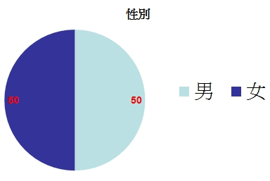
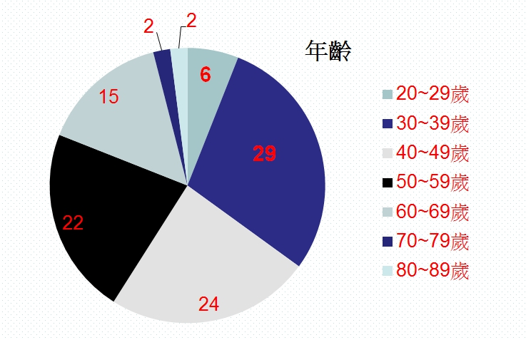
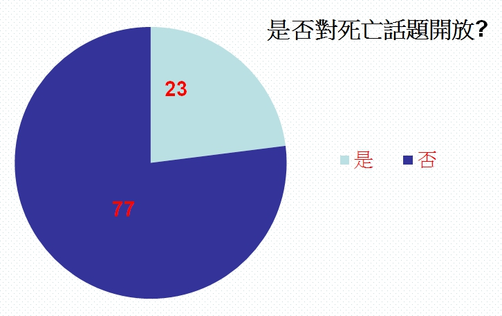
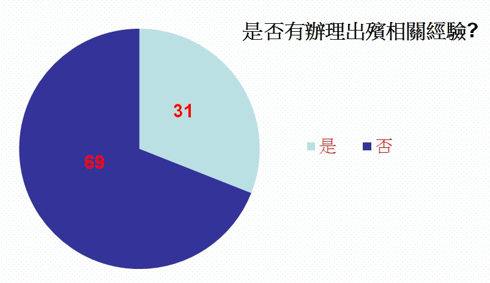
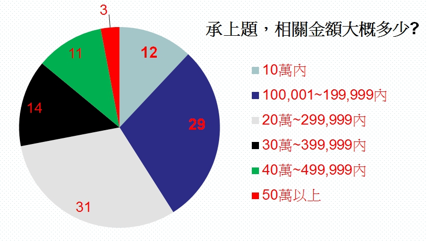
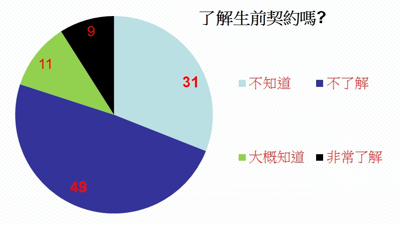
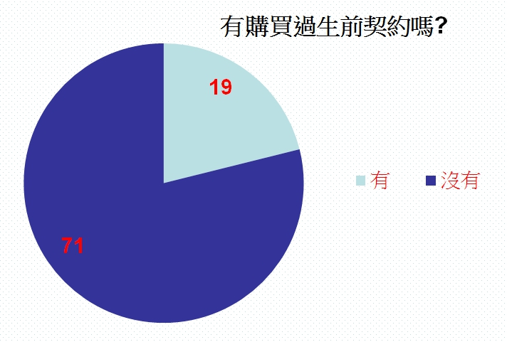
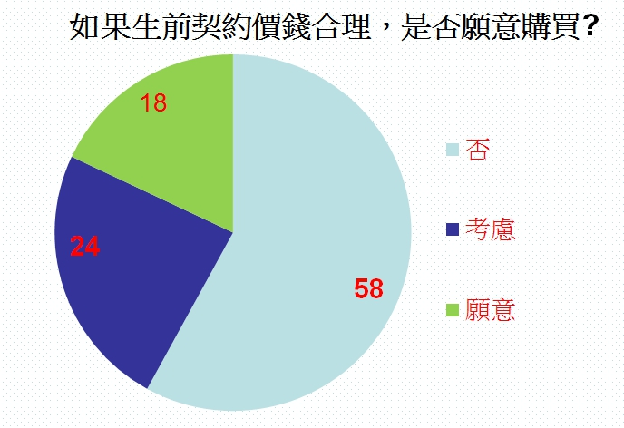
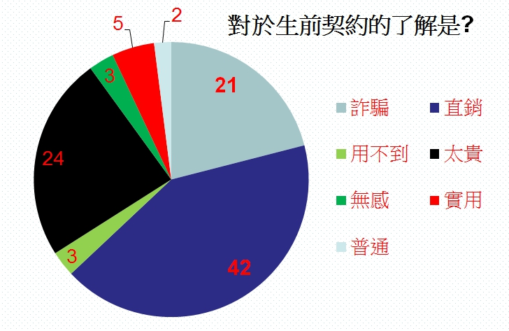

行銷研究報告
指導老師：葉晶雯
你/妳還有多少時間可以使用?(以下所有計算皆用四捨五入)
以20歲為基準，科技發達所以預估活到90歲
依數據以1天睡8小時來計算
每3天=睡了24小時，也就是睡眠時間占了1天(3天X8時=24小時)
1年有365天，帶入上行敘述，365/3約莫=122天
也就是說1年裡有122天在睡覺，(90年-20年)X122天=8540天!?約莫=23年
70年-23年=47，是的~70年裡面只有47年是醒著，接著讓我們再繼續~
大多數人都要上班，那就用平均1天上8小時班及1年有52週來計算
現在大部分都是週休2日，不管哪天休，大概都會7天內休2天，也就是做5休2
1週上5天8小時的班=40小時，再用40小時X52週=2080小時，約莫=87天
1年裡只有87天在上班，3個月都不到想想心情也就好一點了XD
1年裡有122天在睡覺，約莫=睡了4個月
1年12個月-3個月上班時間-4個月睡覺時間=5個月醒著且時間可以自己利用
1年裡面只有約莫5個月的時間是自己的，你/妳還有多少時間可以用?
4 . 公司簡介&產品相關
創立80年以上大企業，台灣第一家也是唯一上市上櫃的殯葬公司(5530)。
以位於台灣北部的白沙灣安樂園為基礎，十年之中完成有如香格里拉的殿堂--「真龍殿」，更與日本SUN LIFE簽約進行殯葬服務技術交流合作，於市場上首開先例推出「生前契約」商品，規劃完整而優質的禮儀服務流程，落實禮儀服務一元化，並於2000年取得亞洲第一家通過ISO 9001國際品保驗證標準的殯葬企業的殊榮。
產品相關服務有─塔位、墓園、生前契約、禮儀精品、禮儀服務。
關於生前契約那檔事
死亡到出殯至結束大致流程
1.臨終關懷 > 2.遺體接駁 > 3.設立靈堂
4.入殮 > 5.治喪協調 > 6.奠禮準備
7.家公奠禮 >8.引發 > 9.火化封罐
10.返主除靈 >11.晉塔安葬 > 12.後續關懷
| Opportunities機會
任何人總有一天都用的到 |
|||
| Strengths優勢
企業大，不缺業務 一條龍服務 |
SO增長策略
以關心方式切入增加跟消費者的連結 |
WO移轉策略
提供網路諮詢與購買服務 |
Weaknesses劣勢
價錢昂貴 |
| ST多元化策略
與據有創新思維行銷公司做結合 |
WT防禦策略
增加現有業務閱讀空氣與識人眼光 |
||
| Threats威脅
普遍民眾保守 大多數民眾對生前契約了解甚少 中小殯葬企業多 |
|||
|  |  |
|  |  |
|  |  |
|  |  |
|  |
8 . 參考資料
個人經驗
範疇:美編、校正
範疇:影片搜尋&提供、網站搜尋&提供
範疇:問卷設計&調查、製作報告、報告